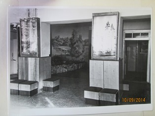
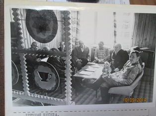
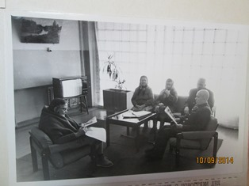
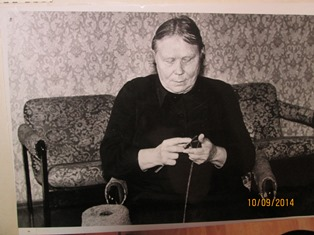
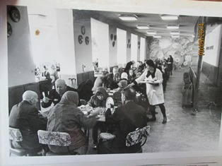
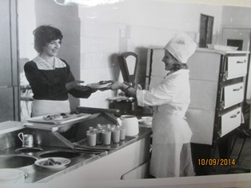

29 июля 1978 года в нашем городе состоялось открытие Сердобского дома ветеранов труда. Это было большим подарком системе социального обслуживания. В доме были созданы хорошие условия для постоянного проживания 310 человек и их медицинского обслуживания.
В доме имеется пищеблок со столовой на 200 посадочных мест, кинозал на 250 мест, банно-прачечный комбинат, гараж на 5 мест, медицинское отделение.
В 1986 году был сдан корпус на 100 мест для проживающих, самостоятельно обслуживающих себя.
С открытия нашего дома-интерната прошло более 30 лет. За эти годы произошло много экономических и политических перемен, менялись люди, менялось руководство, но главная задача дома-интерната осталась прежней - это создание нормальных условий для людей, нуждающихся в заботе и уходе за ними.
Сегодня, в нашем доме ветеранов могут проживать 380 человек, их обслуживает 230 человек. Из 380 человек 260 это инвалиды I, II, III группы, 2 человека участники ВОВ, 302 человека нуждаются в постоянном уходе и наблюдении.
В марте 1996 года в целях улучшения медицинской помощи и обслуживания было организовано отделение "Милосердие" на 150 человек с более расширенным штатом обслуживающего персонала. Здесь работают два врача-терапевта, шесть врачей узких специальностей: невропатолог, окулист, ЛОР, психиатр, стоматолог. Кроме того престарелых обслуживают 50 медсестер и 105 санитарок. Ежедневно проводятся обходы тяжелобольных и амбулаторный прием. В доме-интернате имеется лаборатория, где проводятся клинические анализы. В медотделениях оборудованы и функционируют соответствующие лечебно-профилактические кабинеты: три врачебных кабинета для амбулаторного приема, два процедурных, перевязочная, два физиотерапевтических кабинета, кабинет массажа, кабинет ЛФК, фитобар, стоматологический кабинет.
Сердобский дом ветеранов труда осуществляет медицинскую деятельность согласно лицензии. Предоставляются следующие виды работ и услуг: при осуществлении доврачебной медицинской помощи по: диетологии, лабораторной диагностике, лечебной физкультуре, медицинскому массажу, сестринскому делу, физиотерапии, лечебному делу; при осуществлении амбулаторно-поликлинической медицинской помощи: по неврологии, оториноларингологии, офтальмологии, психиатрии, терапии, хирургии, стоматологии терапевтической.
Администрация дома старается как можно больше приблизить жизнь проживающих к домашним условиям. Заботится об эстетике, уюте комнат и рекреаций, о своевременном ремонте комнат и сантехнического оборудования, о выполнении в полном объеме санитарно-гигиенических требований, техники безопасности.
     {kind=link}
{kind=link}
{kind=link}
{kind=link}
{kind=link}
{kind=link}